~13 CapCut Glitter Effect in DaVinci Resolve~
8/24/2026
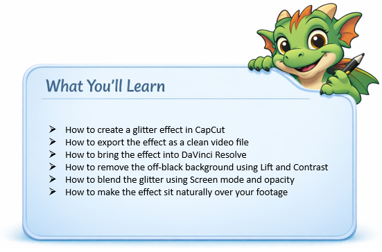
What you Need
- CapCut (web or desktop)
- DaVinci Resolve
- A black background image
CapCut
In this tutorial, we will be looking at another video editing app, which we can use to help us create some effects in DaVinci.
CapCut is a free video editing program that you can also get on the web.
PART 1 — CREATE THE EFFECT IN CAPCUT
- Open CapCut
- Create a new project
Create a black background in something like photoshop, and then just slide it in.
“Black is easiest to key or blend because it disappears cleanly when we use Screen mode.”
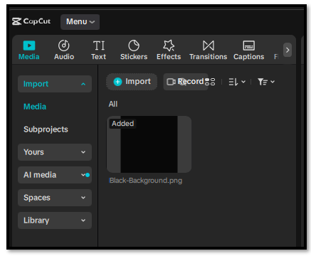
Add the black background to the timeline at the bottom of the app
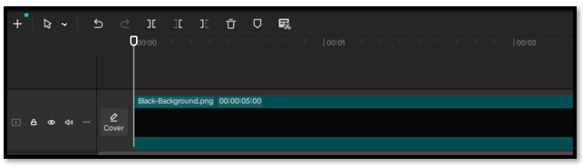
Go to the top of the app, and click on the tab that says Effects.
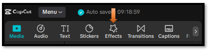
Do a search for glitter fall and hit enter, to have a list of glitter effects show up. I will be using the first effect.
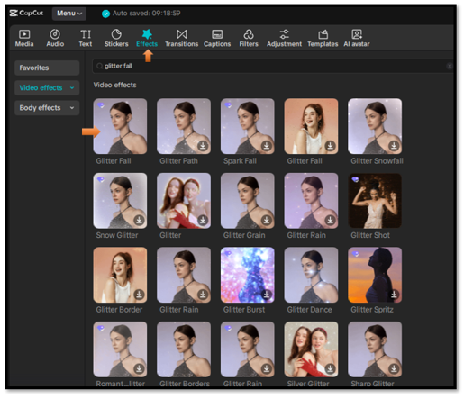
Add your effect ONLY
- Drop in the “glitter fall” effect. (Drag it to the track above the background)
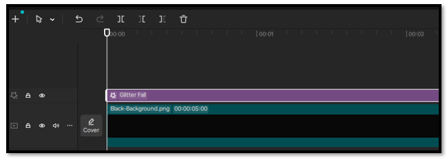
Two of the most important things when creating this effect.
- Make background BLACK
- Make glitter bright (white or warm)
Export Effect Video
Go to the top left side and click on Export.
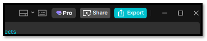
Fill in the form here, and then hit the teal export button at the bottom
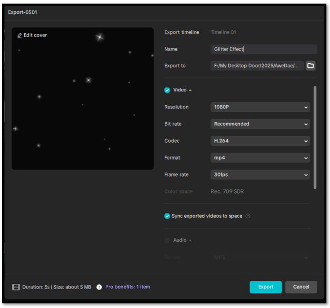
DaVinci
Ok, now we need to drag this effect into our DaVinci app.
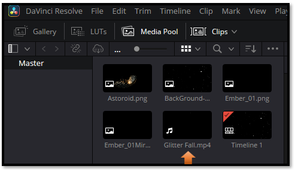
Then just drag this movie clip down on the Timeline
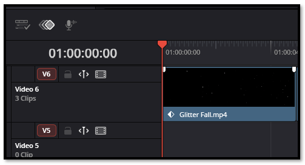
Color Tab
Click on the Color tab at the bottom to go to the Color page
Make sure you have the right clip selected
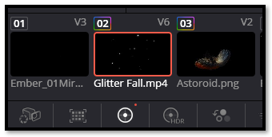
How to Blend our Shadows into the black for Transparency
Effects come in with an off black, and we need to blend that in, and get it to be black in order to get transparency.
In Color Page (on the glitter clip):
Hit Alt-S to add a node
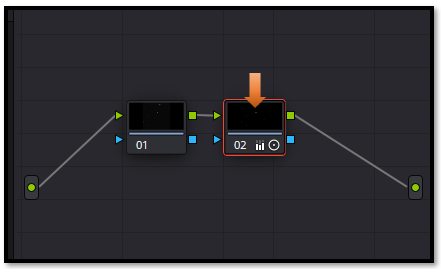
- Lower Lift (shadows)
Lower Lift until the background disappears (you’ll see it turn fully black). - Increase Contrast slightly
- Adjust Gamma carefully
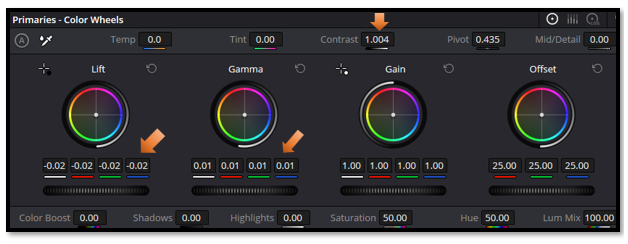
Go back to the Edit Page.
In the inspector on the right- hand side,
- Set Composite Mode to Screen
- Turn down the Opacity, just a tad bit.
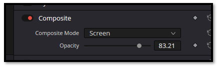
You should see the Glitter effect blend into the black background
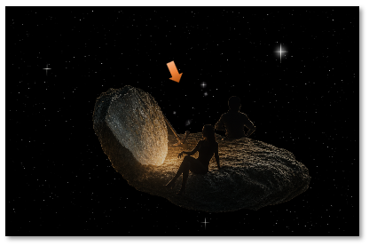
And that’s all it takes to bring a CapCut effect into DaVinci Resolve and make it blend beautifully. This workflow opens the door to hundreds of creative overlays you can customize, colorgrade, and shape to fit your style. Keep experimenting, keep layering, and you’ll discover just how much these small effects can elevate your edits.